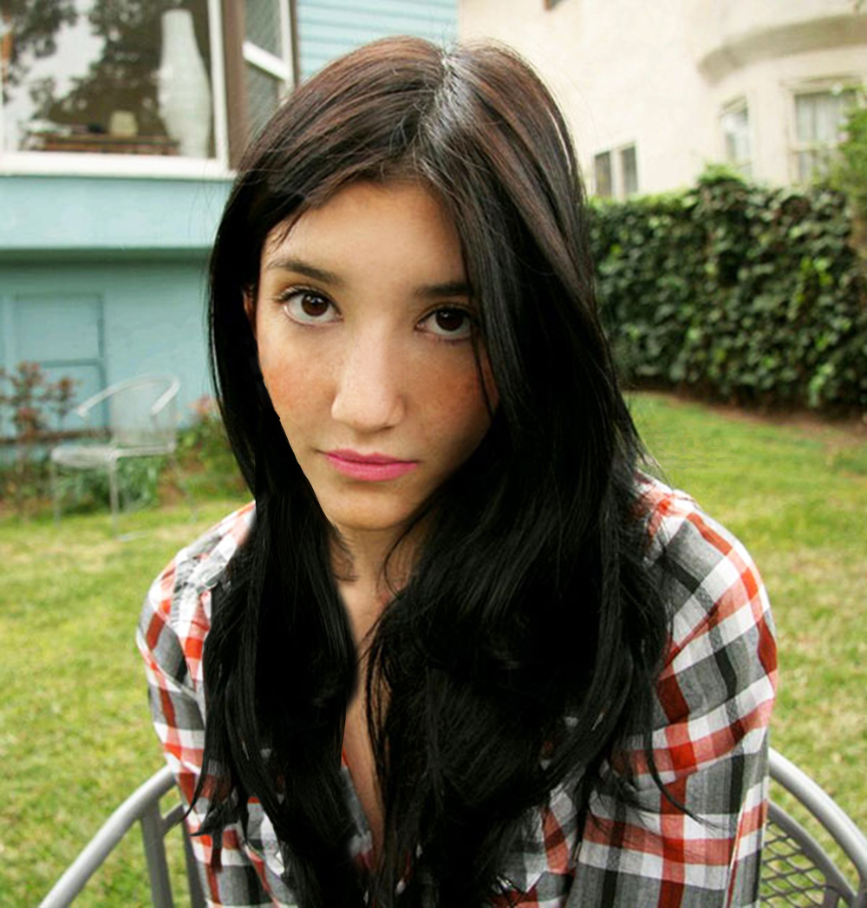

VJEŽBA 5.
Retuširala sam fotografije u programu Photoshop


VJEŽBA 1.
Napravila sam vlastiti font u programu FontForge.
Sadrži slovne znakove mog imena i prezimena i sve znakove hrvatske abecede: Š, š, Č, č, Ć, ć, Đ, đ, Ž, ž
VJEŽBA 2.
Nacrtala sam Bezierove krivulje u vektorskom programu Inkscape, u zadanom koordinatnom sustavu
VJEŽBA 3.
Traceala sam oblik cvijeta i očiju u programu Illustrator te sam koristila razne alate poput swatch i transformacija
VJEŽBA 4.
Izradila sam složene objekate koji se sastoje od više staza metodama spajanja (Unite/Compound path) ili oduzimanja oblika (Difference/Subtract).
VJEŽBA 5.
Retuširala sam fotografije u programu Photoshop
VJEŽBA 6.
Tehnikama neinvazivnog koloriranja slike mijenjala sam boje određenih područja slike.
VJEŽBA 7.
Kombinirala sam više fotografija izrezivanjem dijelova različitih slika i spajala sam ih u jednu cjelinu.
VJEŽBA 8.
Snimila sam kratki video i obradila ga kao kinemagraf
.gif)
.gif)
VJEŽBA 8.
Izrezala sam i spojila par videa zajeno te sam dodala neke efekte kako bi ih dodatno uredila
PROJEKTNI ZADATAK 1.
Kreirala sam vlastiti font koji tvori riječ PRIRODA te sam ga ubacila u program Inkscape
u kojem sam pomoću alata za crtanje Bezierovih krivulja nacrtala sliku prema zadanom predlošku
PROJEKTNI ZADATAK 2.
Kreirala sam sliku u Adobe Photoshopu kao kompoziciju više fotografija koristeći tehnike
retuširanja, fotomontaže i koloriranja.